L3 — Formal
正式交付物 · 46 项
下面这些可以直接用。色板另见
tokens.json / tokens.css / tokens.ts；
启动页与通知图标是 Android XML，不出缩略图，落在
android-shell/app/src/main/res/。
标识矢量 · 11 项
brand/logo/ · 全部由 build.py 派生，不要手改单个文件
logo/icon-c.svglogo/icon-b.svglogo/icon-tech.svglogo/cn1-red.svglogo/mark-red.svglogo/mark-ink.svglogo/mark-reverse.svglogo/adaptive-fg-c.svglogo/adaptive-bg-c.svglogo/adaptive-fg-b.svglogo/adaptive-bg-b.svg字标与域名 · 5 项
含中文，交印刷厂或商标申报前必须转轮廓
logo/wordmark-hongxuan.svglogo/wordmark-hongxuan-haowu.svglogo/wordmark-hongxuan-tech.svglogo/domain-hxmall.svglogo/domain-hxtech.svgApp 图标 · 位图 · 6 项
iOS 1024 不得带 alpha 通道，带了 App Store 直接拒
ios/AppIcon-c.appiconset/icon-1024.pngios/AppIcon-b.appiconset/icon-1024.png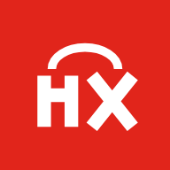
android-shell/app/src/consumer/res/mipmap-xxxhdpi/ic_launcher.pngandroid-shell/app/src/merchant/res/mipmap-xxxhdpi/ic_launcher.png
store/play-c-512.png
store/play-b-512.png
官网 site/public/ · 5 项
唯一对外的公开入口。缺分享图 = 发链接没有缩略图

site/public/favicon.svgsite/public/apple-touch-icon.pngsite/public/icon-512.pngsite/public/share-300.png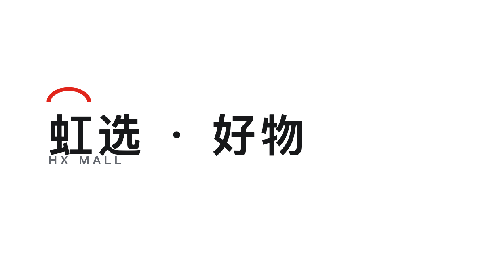
site/public/og.png商标申报稿 · 8 项
纯黑实心 / 白底 / 无渐变无阴影无描边。提交前转轮廓、另存 JPG
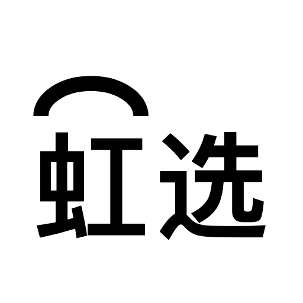
trademark/cn2a-bw-512.png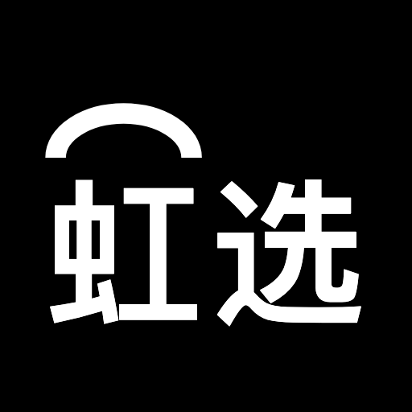
trademark/cn2a-inv-512.png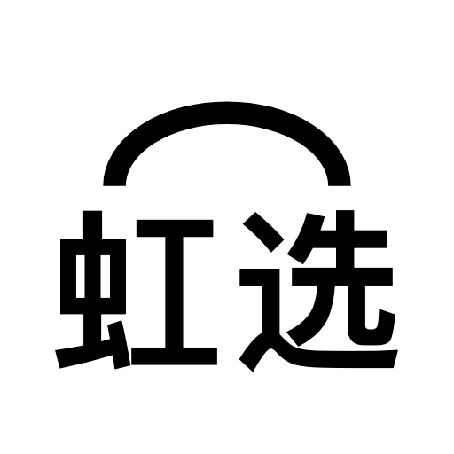
trademark/cn2b-bw-512.png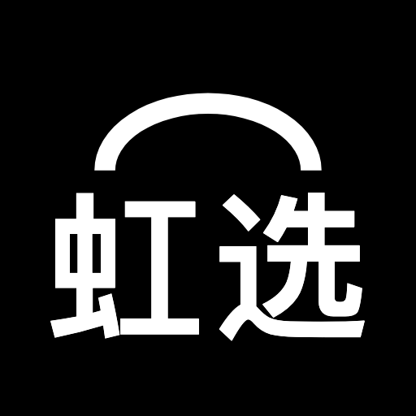
trademark/cn2b-inv-512.png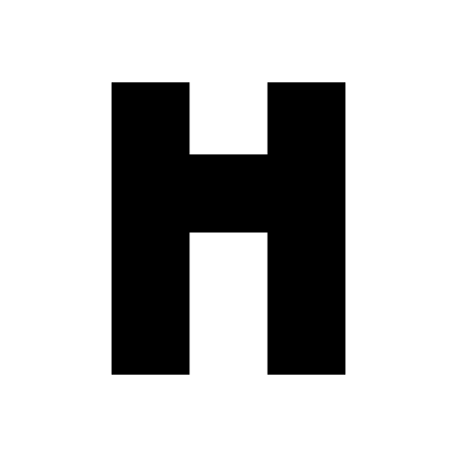
trademark/h-bw-512.pngtrademark/h-inv-512.png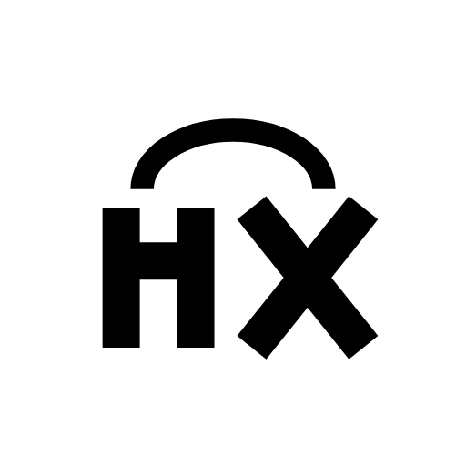
trademark/hx-bw-512.png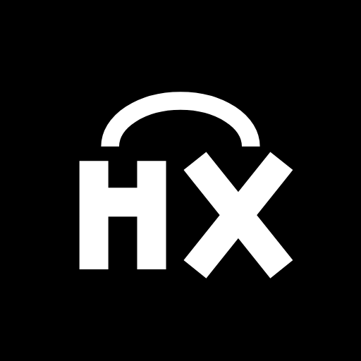
trademark/hx-inv-512.png母品牌官网 hxtech.top · 4 项
墨底 + 亮红弧。母品牌不复用子业务的红方章 —— 否则合同抬头与商城 App 长得一样，对公场合分不出主体

dist/site-hxtech/favicon.svg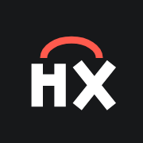
dist/site-hxtech/apple-touch-icon.png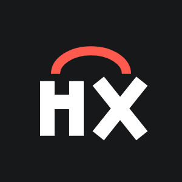
dist/site-hxtech/share-300.png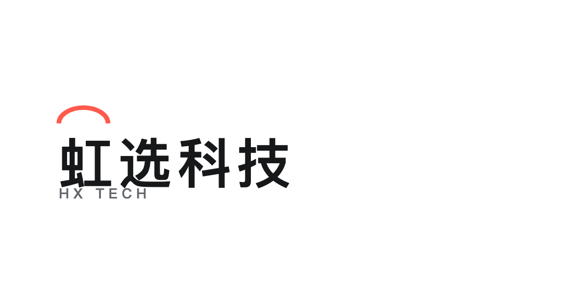
dist/site-hxtech/og.png名片 · 5 项
模板 + 数据表：改 brand/print/people.csv 重跑 gen-print.py。90×54mm，出血 3mm，安全区 5mm。预览稿带裁切线与安全区，不要交印厂